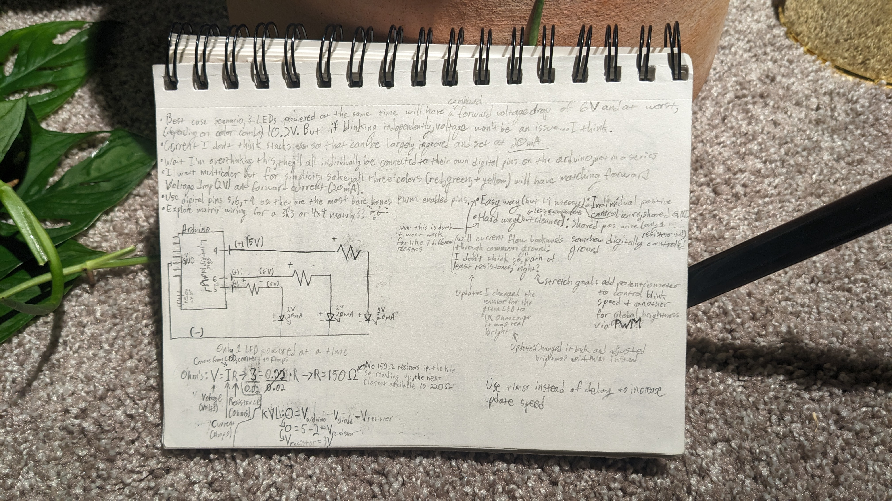
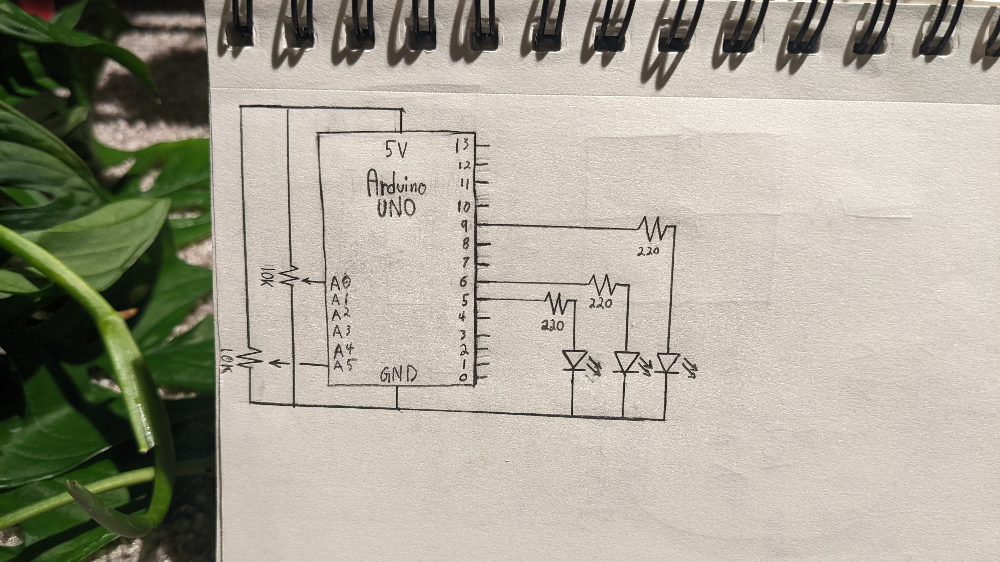
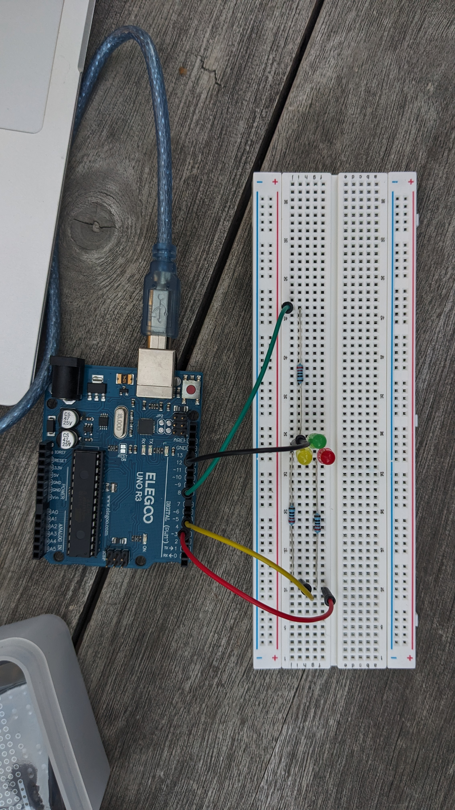
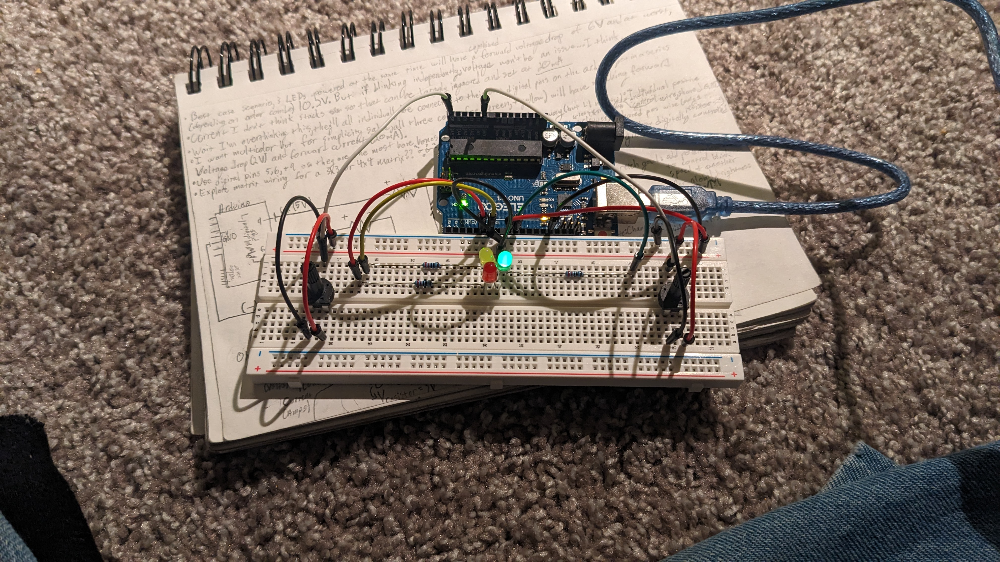
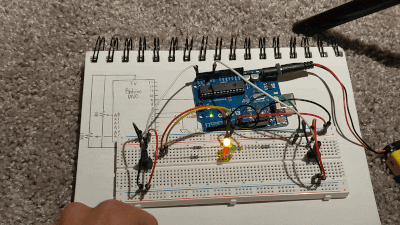
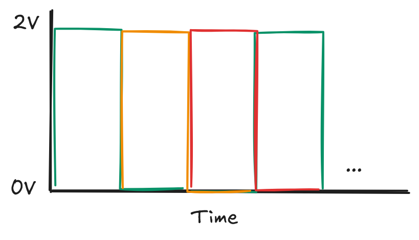

// Defining the digital pins being used as constants to make potential future changes easier
const int ledPins[] = {5, 6, 9};
const int powerPin = 8;
// Defines minimum bound for LED brightness to be very dim instead of completely off
const int minBrightness = 1;
// The green LED was much brighter than the others so this defines its adjusted max brightness to better visually match the others
const int greenAdjustedMax = (255 - 240);
// Defines the bounds of the variable blink rate
const int blinkWaitMin = 20;
const int blinkWaitMax = 1000;
void setup() {
// Sets the rate that the Arduino checks data from the potentiometers and initializes it
Serial.begin(9600);
// Sets the power pin to actually be a power pin (I did this instead of using the dedicated 5V pin mainly for the aesthetics of the circuit)
pinMode(powerPin, OUTPUT);
digitalWrite(powerPin, HIGH);
// Iterates through the LED pin array, setting them as OUTPUT to configure them to be able to power things
for (int v : ledPins) {
pinMode(v, OUTPUT);
}
}
void loop() {
// Declares neccesary variables for potentiometer logic
int brightness;
int blinkRate;
// Iterates through the LED pin array, setting their brightness and blinkRate variables based on the left and right potentiometer values respectively
for (int v : ledPins) {
// The conditional logic is neccessary for the green LED max brightness adjustment
if (v == 9) {
brightness = map(analogRead(A5), 0, 1023, minBrightness, greenAdjustedMax);
} else {
brightness = map(analogRead(A5), 0, 1023, minBrightness, 255);
}
// Sets the time between blinks based on the right potentiometer value, mapping the potentiometer min max to the min max defined by the programmer
blinkRate = map(analogRead(A0), 0, 1023, blinkWaitMax, blinkWaitMin);
// Turns the LED on to the brightness calculated above, waits the amount blinkRate that were calculated above, then finally turns the LED off
analogWrite(v, brightness);
delay(blinkRate);
analogWrite(v, 0);
}
}
// Defining the digital pins being used as constants to make potential future changes easier
const int ledPins[] = {5, 6, 9};
const int powerPin = 8;
// Defines minimum bound for LED brightness to be very dim instead of completely off
const int minBrightness = 1;
// The green LED was much brighter than the others so this defines its adjusted max brightness to better visually match the others
const int greenAdjustedMax = (255 - 240);
const int greenLedPinIndex = 2;
// Defines the bounds of the variable blink rate
const int blinkWaitMin = 20;
const int blinkWaitMax = 1000;
// Defines vars needed for the timer logic
long prevMillis = 0;
int currLedIndex = 0;
// Work around needed for lack of array length function in .ino code
int numLeds = sizeof(ledPins) / sizeof(ledPins[0]);
void setup() {
// Sets the rate that the Arduino checks data from the potentiometers and initializes it
Serial.begin(9600);
// Sets the power pin to actually be a power pin (I did this instead of using the dedicated 5V pin mainly for the aesthetics of the circuit)
pinMode(powerPin, OUTPUT);
digitalWrite(powerPin, HIGH);
// Iterates through the LED pin array, setting them as OUTPUT to configure them to be able to power things
for (int v : ledPins) {
pinMode(v, OUTPUT);
}
}
void loop() {
// Declares neccesary variables for potentiometer logic
int brightness;
int blinkRate;
int leftPotentVal = analogRead(A5);
int rightPotentVal = analogRead(A0);
// Sets the time between blinks based on the right potentiometer value, mapping the potentiometer min max to the min max defined by the programmer
blinkRate = map(rightPotentVal, 0, 1023, blinkWaitMax, blinkWaitMin);
long currMillis = millis();
// If the amount of time specified in blinkRate has elapsed, then change the LEDs
if (millis() - prevMillis >= blinkRate) {
// Turn the current LED off
analogWrite(ledPins[currLedIndex], 0);
// Advances the index
currLedIndex ++;
// Circles the index back to 0 once it's reached the end of the LED pin array
if (currLedIndex >= numLeds) {
currLedIndex = 0;
}
// Timer logic
prevMillis = currMillis;
// The conditional logic is neccessary for the green LED max brightness adjustment
if (currLedIndex == greenLedPinIndex) {
brightness = map(leftPotentVal, 0, 1023, minBrightness, greenAdjustedMax);
} else {
brightness = map(leftPotentVal, 0, 1023, minBrightness, 255);
}
// Turns the new current LED on to the brightness calculated in the brightness variable
analogWrite(ledPins[currLedIndex], brightness);
}
}

